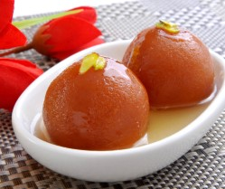
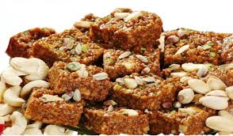

Kaju katli, also known as kaju barfi, is an Indian dessert similar to a barfi. Kaju means cashew; Barfi is often made by thickening milk with sugar and other ingredients.
D02

₹250\Kg
Gulab Jamun
Gulab jamun (also spelled gulaab jamun) is a milk-solid-based sweet from the Indian subcontinent, and a type of mithai, popular in India.
D03
₹450\Kg
Milk Cake
Milk cake also known as Kalakand is an Indian sweet made out of solidified, sweetened milk and paneer.
D04
₹300\Kg
Rasgulla
Rasgulla is an Indian syrupy dessert popular in the Indian subcontinent and regions with South Asian diaspora. It is made from ball-shaped dumplings of chhena (an Indian cottage cheese) and semolina dough, cooked in light syrup made of sugar.
D05

₹450\Kg
Dodha Burfi
Dodha is a very traditional and festive sweet from state of Punjab and is sort of like an Indian version of fudge made with milk, sugar, and nuts.
D06
₹850\Kg
Kaju Katli
Kaju katli, also known as kaju barfi, is an Indian dessert similar to a barfi. Kaju means cashew; Barfi is often made by thickening milk with sugar and other ingredients.